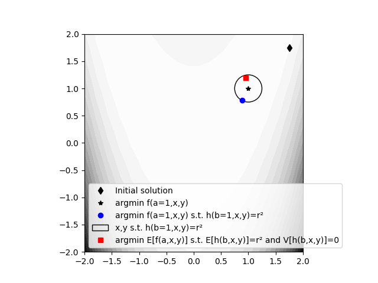

Note
Click here to download the full example code
Managing uncertain equality constraints¶
This example shows a simple way to manage an uncertain equality constraint associated with a threshold, by forcing the mean of its left-hand side to be equal to this threshold and its variance to be zero.
The reference optimization problem consists in minimizing the Rosenbrock function \(f(x,y)=(1-x)^2+100(y-x^2)^2\) over \([-2,2]^2\) under the equality constraint \(h(x,y)=r^2\) with \(h(x,y)=(x-1)^2+(y-1)^2\) and \(r=0.25\).
In the following, we suppose that \(f(x,y)\) and \(h(x,y)\) depend on uncertain parameters \(a\) and \(b\), as \(f(x,y)=(a-x)^2+100(y-x^2)^2\) and \(h(x,y)=(x-b)^2+(y-1)^2\), and seek to minimize \(\mathbb{E}[f(x,y)]\) under the equality constraints \(\mathbb{E}[h(x,y)]=r^2\) and \(\mathbb{V}[h(x,y)]=0\).
from gemseo import configure_logger
from gemseo.algos.design_space import DesignSpace
from gemseo.algos.parameter_space import ParameterSpace
from gemseo.disciplines.analytic import AnalyticDiscipline
from gemseo.scenarios.mdo_scenario import MDOScenario
from matplotlib import pyplot as plt
from matplotlib.pyplot import colormaps
from numpy import array
from gemseo_umdo.formulations.sampling_settings import Sampling_Settings
from gemseo_umdo.scenarios.umdo_scenario import UMDOScenario
configure_logger()
Out:
<RootLogger root (INFO)>
Discipline and design space¶
First, we create a discipline to evaluate \(f\) and \(h\) from the design variables \(x\) and \(y\) and from the uncertain variables \(a\) and \(b\) initialized at 1:
discipline = AnalyticDiscipline({
"f": "(a-x)**2+100*(y-x**2)**2",
"h": "(x-b)**2+(y-1)**2",
})
discipline.io.input_grammar.defaults["a"] = array([1.0])
discipline.io.input_grammar.defaults["b"] = array([1.0])
Then, we create the design space:
design_space = DesignSpace()
design_space.add_variable("x", lower_bound=-2, upper_bound=2.0)
design_space.add_variable("y", lower_bound=-2, upper_bound=2.0)
and the initial design point:
initial_design = array([1.75, 1.75])
For visualization purposes, we sample the objective function over a regular grid:
scenario = MDOScenario(
[discipline],
"f",
design_space,
formulation_name="DisciplinaryOpt",
)
scenario.execute(algo_name="OT_FULLFACT", n_samples=20 * 20)
Out:
INFO - 23:23:58: *** Start MDOScenario execution ***
INFO - 23:23:58: MDOScenario
INFO - 23:23:58: Disciplines: AnalyticDiscipline
INFO - 23:23:58: MDO formulation: DisciplinaryOpt
INFO - 23:23:58: Optimization problem:
INFO - 23:23:58: minimize f(x, y)
INFO - 23:23:58: with respect to x, y
INFO - 23:23:58: over the design space:
INFO - 23:23:58: +------+-------------+-------+-------------+-------+
INFO - 23:23:58: | Name | Lower bound | Value | Upper bound | Type |
INFO - 23:23:58: +------+-------------+-------+-------------+-------+
INFO - 23:23:58: | x | -2 | None | 2 | float |
INFO - 23:23:58: | y | -2 | None | 2 | float |
INFO - 23:23:58: +------+-------------+-------+-------------+-------+
INFO - 23:23:58: Solving optimization problem with algorithm OT_FULLFACT:
INFO - 23:23:58: 1%| | 3/400 [00:00<00:00, 821.45 it/sec, obj=2.03e+3]
INFO - 23:23:58: 1%| | 4/400 [00:00<00:00, 1008.31 it/sec, obj=1.51e+3]
INFO - 23:23:58: 1%|▏ | 5/400 [00:00<00:00, 1170.55 it/sec, obj=1.12e+3]
INFO - 23:23:58: 2%|▏ | 6/400 [00:00<00:00, 1318.69 it/sec, obj=843]
INFO - 23:23:58: 2%|▏ | 7/400 [00:00<00:00, 1451.75 it/sec, obj=650]
INFO - 23:23:58: 2%|▏ | 8/400 [00:00<00:00, 1570.46 it/sec, obj=521]
INFO - 23:23:58: 2%|▏ | 9/400 [00:00<00:00, 1681.01 it/sec, obj=443]
INFO - 23:23:58: 2%|▎ | 10/400 [00:00<00:00, 1781.25 it/sec, obj=406]
INFO - 23:23:58: 3%|▎ | 11/400 [00:00<00:00, 1877.56 it/sec, obj=405]
INFO - 23:23:58: 3%|▎ | 12/400 [00:00<00:00, 1948.95 it/sec, obj=441]
INFO - 23:23:58: 3%|▎ | 13/400 [00:00<00:00, 2019.93 it/sec, obj=519]
INFO - 23:23:58: 4%|▎ | 14/400 [00:00<00:00, 2090.66 it/sec, obj=647]
INFO - 23:23:58: 4%|▍ | 15/400 [00:00<00:00, 2161.79 it/sec, obj=840]
INFO - 23:23:58: 4%|▍ | 16/400 [00:00<00:00, 2216.86 it/sec, obj=1.12e+3]
INFO - 23:23:58: 4%|▍ | 17/400 [00:00<00:00, 2278.35 it/sec, obj=1.5e+3]
INFO - 23:23:58: 4%|▍ | 18/400 [00:00<00:00, 2334.85 it/sec, obj=2.02e+3]
INFO - 23:23:58: 5%|▍ | 19/400 [00:00<00:00, 2346.50 it/sec, obj=2.71e+3]
INFO - 23:23:58: 5%|▌ | 20/400 [00:00<00:00, 2391.14 it/sec, obj=3601.0]
INFO - 23:23:58: 5%|▌ | 21/400 [00:00<00:00, 2434.50 it/sec, obj=3.36e+3]
INFO - 23:23:58: 6%|▌ | 22/400 [00:00<00:00, 2478.04 it/sec, obj=2.5e+3]
INFO - 23:23:58: 6%|▌ | 23/400 [00:00<00:00, 2511.76 it/sec, obj=1.84e+3]
INFO - 23:23:58: 6%|▌ | 24/400 [00:00<00:00, 2553.09 it/sec, obj=1.35e+3]
INFO - 23:23:58: 6%|▋ | 25/400 [00:00<00:00, 2543.85 it/sec, obj=984]
INFO - 23:23:58: 6%|▋ | 26/400 [00:00<00:00, 2565.02 it/sec, obj=726]
INFO - 23:23:58: 7%|▋ | 27/400 [00:00<00:00, 2598.88 it/sec, obj=547]
INFO - 23:23:58: 7%|▋ | 28/400 [00:00<00:00, 2631.43 it/sec, obj=429]
INFO - 23:23:58: 7%|▋ | 29/400 [00:00<00:00, 2664.98 it/sec, obj=359]
INFO - 23:23:58: 8%|▊ | 30/400 [00:00<00:00, 2691.53 it/sec, obj=325]
INFO - 23:23:58: 8%|▊ | 31/400 [00:00<00:00, 2722.83 it/sec, obj=325]
INFO - 23:23:58: 8%|▊ | 32/400 [00:00<00:00, 2750.25 it/sec, obj=357]
INFO - 23:23:58: 8%|▊ | 33/400 [00:00<00:00, 2780.20 it/sec, obj=427]
INFO - 23:23:58: 8%|▊ | 34/400 [00:00<00:00, 2802.69 it/sec, obj=544]
INFO - 23:23:58: 9%|▉ | 35/400 [00:00<00:00, 2828.75 it/sec, obj=722]
INFO - 23:23:58: 9%|▉ | 36/400 [00:00<00:00, 2853.32 it/sec, obj=980]
INFO - 23:23:58: 9%|▉ | 37/400 [00:00<00:00, 2874.67 it/sec, obj=1.34e+3]
INFO - 23:23:58: 10%|▉ | 38/400 [00:00<00:00, 2893.46 it/sec, obj=1.83e+3]
INFO - 23:23:58: 10%|▉ | 39/400 [00:00<00:00, 2914.99 it/sec, obj=2.49e+3]
INFO - 23:23:58: 10%|█ | 40/400 [00:00<00:00, 2934.00 it/sec, obj=3.35e+3]
INFO - 23:23:58: 10%|█ | 41/400 [00:00<00:00, 2954.55 it/sec, obj=3.12e+3]
INFO - 23:23:58: 10%|█ | 42/400 [00:00<00:00, 2969.92 it/sec, obj=2.29e+3]
INFO - 23:23:58: 11%|█ | 43/400 [00:00<00:00, 2988.78 it/sec, obj=1.66e+3]
INFO - 23:23:58: 11%|█ | 44/400 [00:00<00:00, 3005.05 it/sec, obj=1.2e+3]
INFO - 23:23:58: 11%|█▏ | 45/400 [00:00<00:00, 3020.24 it/sec, obj=857]
INFO - 23:23:58: 12%|█▏ | 46/400 [00:00<00:00, 3030.90 it/sec, obj=617]
INFO - 23:23:58: 12%|█▏ | 47/400 [00:00<00:00, 3047.90 it/sec, obj=453]
INFO - 23:23:58: 12%|█▏ | 48/400 [00:00<00:00, 3062.79 it/sec, obj=347]
INFO - 23:23:58: 12%|█▏ | 49/400 [00:00<00:00, 3078.18 it/sec, obj=284]
INFO - 23:23:58: 12%|█▎ | 50/400 [00:00<00:00, 3088.95 it/sec, obj=254]
INFO - 23:23:58: 13%|█▎ | 51/400 [00:00<00:00, 3104.19 it/sec, obj=254]
INFO - 23:23:58: 13%|█▎ | 52/400 [00:00<00:00, 3108.97 it/sec, obj=282]
INFO - 23:23:58: 13%|█▎ | 53/400 [00:00<00:00, 3123.92 it/sec, obj=345]
INFO - 23:23:58: 14%|█▎ | 54/400 [00:00<00:00, 3135.67 it/sec, obj=450]
INFO - 23:23:58: 14%|█▍ | 55/400 [00:00<00:00, 3148.66 it/sec, obj=613]
INFO - 23:23:58: 14%|█▍ | 56/400 [00:00<00:00, 3161.93 it/sec, obj=852]
INFO - 23:23:58: 14%|█▍ | 57/400 [00:00<00:00, 3175.90 it/sec, obj=1.19e+3]
INFO - 23:23:58: 14%|█▍ | 58/400 [00:00<00:00, 3186.20 it/sec, obj=1.66e+3]
INFO - 23:23:58: 15%|█▍ | 59/400 [00:00<00:00, 3199.52 it/sec, obj=2.29e+3]
INFO - 23:23:58: 15%|█▌ | 60/400 [00:00<00:00, 3210.62 it/sec, obj=3.11e+3]
INFO - 23:23:58: 15%|█▌ | 61/400 [00:00<00:00, 3224.03 it/sec, obj=2.89e+3]
INFO - 23:23:58: 16%|█▌ | 62/400 [00:00<00:00, 3233.05 it/sec, obj=2.1e+3]
INFO - 23:23:58: 16%|█▌ | 63/400 [00:00<00:00, 3245.13 it/sec, obj=1.5e+3]
INFO - 23:23:58: 16%|█▌ | 64/400 [00:00<00:00, 3255.38 it/sec, obj=1.06e+3]
INFO - 23:23:58: 16%|█▋ | 65/400 [00:00<00:00, 3267.49 it/sec, obj=739]
INFO - 23:23:58: 16%|█▋ | 66/400 [00:00<00:00, 3274.98 it/sec, obj=517]
INFO - 23:23:58: 17%|█▋ | 67/400 [00:00<00:00, 3281.51 it/sec, obj=368]
INFO - 23:23:58: 17%|█▋ | 68/400 [00:00<00:00, 3288.25 it/sec, obj=273]
INFO - 23:23:58: 17%|█▋ | 69/400 [00:00<00:00, 3298.24 it/sec, obj=217]
INFO - 23:23:58: 18%|█▊ | 70/400 [00:00<00:00, 3305.84 it/sec, obj=192]
INFO - 23:23:58: 18%|█▊ | 71/400 [00:00<00:00, 3315.47 it/sec, obj=191]
INFO - 23:23:58: 18%|█▊ | 72/400 [00:00<00:00, 3324.53 it/sec, obj=216]
INFO - 23:23:58: 18%|█▊ | 73/400 [00:00<00:00, 3335.27 it/sec, obj=271]
INFO - 23:23:58: 18%|█▊ | 74/400 [00:00<00:00, 3342.15 it/sec, obj=365]
INFO - 23:23:58: 19%|█▉ | 75/400 [00:00<00:00, 3351.94 it/sec, obj=513]
INFO - 23:23:58: 19%|█▉ | 76/400 [00:00<00:00, 3360.64 it/sec, obj=734]
INFO - 23:23:58: 19%|█▉ | 77/400 [00:00<00:00, 3368.88 it/sec, obj=1.05e+3]
INFO - 23:23:58: 20%|█▉ | 78/400 [00:00<00:00, 3375.04 it/sec, obj=1.49e+3]
INFO - 23:23:58: 20%|█▉ | 79/400 [00:00<00:00, 3383.47 it/sec, obj=2.09e+3]
INFO - 23:23:58: 20%|██ | 80/400 [00:00<00:00, 3392.32 it/sec, obj=2.88e+3]
INFO - 23:23:58: 20%|██ | 81/400 [00:00<00:00, 3399.19 it/sec, obj=2.67e+3]
INFO - 23:23:58: 20%|██ | 82/400 [00:00<00:00, 3403.83 it/sec, obj=1.91e+3]
INFO - 23:23:58: 21%|██ | 83/400 [00:00<00:00, 3409.64 it/sec, obj=1.34e+3]
INFO - 23:23:58: 21%|██ | 84/400 [00:00<00:00, 3417.51 it/sec, obj=924]
INFO - 23:23:58: 21%|██▏ | 85/400 [00:00<00:00, 3424.15 it/sec, obj=629]
INFO - 23:23:58: 22%|██▏ | 86/400 [00:00<00:00, 3428.74 it/sec, obj=426]
INFO - 23:23:58: 22%|██▏ | 87/400 [00:00<00:00, 3435.53 it/sec, obj=292]
INFO - 23:23:58: 22%|██▏ | 88/400 [00:00<00:00, 3443.15 it/sec, obj=208]
INFO - 23:23:58: 22%|██▏ | 89/400 [00:00<00:00, 3449.10 it/sec, obj=160]
INFO - 23:23:58: 22%|██▎ | 90/400 [00:00<00:00, 3454.25 it/sec, obj=138]
INFO - 23:23:58: 23%|██▎ | 91/400 [00:00<00:00, 3461.24 it/sec, obj=137]
INFO - 23:23:58: 23%|██▎ | 92/400 [00:00<00:00, 3464.47 it/sec, obj=159]
INFO - 23:23:58: 23%|██▎ | 93/400 [00:00<00:00, 3470.35 it/sec, obj=206]
INFO - 23:23:58: 24%|██▎ | 94/400 [00:00<00:00, 3474.65 it/sec, obj=289]
INFO - 23:23:58: 24%|██▍ | 95/400 [00:00<00:00, 3465.76 it/sec, obj=422]
INFO - 23:23:58: 24%|██▍ | 96/400 [00:00<00:00, 3470.04 it/sec, obj=624]
INFO - 23:23:58: 24%|██▍ | 97/400 [00:00<00:00, 3476.23 it/sec, obj=919]
INFO - 23:23:58: 24%|██▍ | 98/400 [00:00<00:00, 3480.07 it/sec, obj=1.33e+3]
INFO - 23:23:58: 25%|██▍ | 99/400 [00:00<00:00, 3484.99 it/sec, obj=1.9e+3]
INFO - 23:23:58: 25%|██▌ | 100/400 [00:00<00:00, 3490.02 it/sec, obj=2.66e+3]
INFO - 23:23:58: 25%|██▌ | 101/400 [00:00<00:00, 3496.06 it/sec, obj=2.46e+3]
INFO - 23:23:58: 26%|██▌ | 102/400 [00:00<00:00, 3498.34 it/sec, obj=1.73e+3]
INFO - 23:23:58: 26%|██▌ | 103/400 [00:00<00:00, 3502.14 it/sec, obj=1.19e+3]
INFO - 23:23:58: 26%|██▌ | 104/400 [00:00<00:00, 3505.67 it/sec, obj=801]
INFO - 23:23:58: 26%|██▋ | 105/400 [00:00<00:00, 3510.27 it/sec, obj=528]
INFO - 23:23:58: 26%|██▋ | 106/400 [00:00<00:00, 3512.51 it/sec, obj=344]
INFO - 23:23:58: 27%|██▋ | 107/400 [00:00<00:00, 3517.94 it/sec, obj=225]
INFO - 23:23:58: 27%|██▋ | 108/400 [00:00<00:00, 3522.87 it/sec, obj=152]
INFO - 23:23:58: 27%|██▋ | 109/400 [00:00<00:00, 3528.71 it/sec, obj=111]
INFO - 23:23:58: 28%|██▊ | 110/400 [00:00<00:00, 3531.80 it/sec, obj=93.1]
INFO - 23:23:58: 28%|██▊ | 111/400 [00:00<00:00, 3537.26 it/sec, obj=92.7]
INFO - 23:23:58: 28%|██▊ | 112/400 [00:00<00:00, 3540.11 it/sec, obj=110]
INFO - 23:23:58: 28%|██▊ | 113/400 [00:00<00:00, 3544.61 it/sec, obj=150]
INFO - 23:23:58: 28%|██▊ | 114/400 [00:00<00:00, 3547.53 it/sec, obj=222]
INFO - 23:23:58: 29%|██▉ | 115/400 [00:00<00:00, 3552.69 it/sec, obj=340]
INFO - 23:23:58: 29%|██▉ | 116/400 [00:00<00:00, 3556.31 it/sec, obj=524]
INFO - 23:23:58: 29%|██▉ | 117/400 [00:00<00:00, 3560.43 it/sec, obj=795]
INFO - 23:23:58: 30%|██▉ | 118/400 [00:00<00:00, 3562.63 it/sec, obj=1.18e+3]
INFO - 23:23:58: 30%|██▉ | 119/400 [00:00<00:00, 3567.40 it/sec, obj=1.72e+3]
INFO - 23:23:58: 30%|███ | 120/400 [00:00<00:00, 3572.10 it/sec, obj=2.45e+3]
INFO - 23:23:58: 30%|███ | 121/400 [00:00<00:00, 3575.66 it/sec, obj=2.25e+3]
INFO - 23:23:58: 30%|███ | 122/400 [00:00<00:00, 3578.23 it/sec, obj=1.56e+3]
INFO - 23:23:58: 31%|███ | 123/400 [00:00<00:00, 3582.56 it/sec, obj=1.05e+3]
INFO - 23:23:58: 31%|███ | 124/400 [00:00<00:00, 3586.90 it/sec, obj=687]
INFO - 23:23:58: 31%|███▏ | 125/400 [00:00<00:00, 3590.55 it/sec, obj=436]
INFO - 23:23:58: 32%|███▏ | 126/400 [00:00<00:00, 3593.48 it/sec, obj=271]
INFO - 23:23:58: 32%|███▏ | 127/400 [00:00<00:00, 3597.90 it/sec, obj=167]
INFO - 23:23:58: 32%|███▏ | 128/400 [00:00<00:00, 3602.65 it/sec, obj=105]
INFO - 23:23:58: 32%|███▏ | 129/400 [00:00<00:00, 3605.90 it/sec, obj=71.7]
INFO - 23:23:58: 32%|███▎ | 130/400 [00:00<00:00, 3608.70 it/sec, obj=57.2]
INFO - 23:23:58: 33%|███▎ | 131/400 [00:00<00:00, 3610.67 it/sec, obj=56.7]
INFO - 23:23:58: 33%|███▎ | 132/400 [00:00<00:00, 3613.68 it/sec, obj=70.5]
INFO - 23:23:58: 33%|███▎ | 133/400 [00:00<00:00, 3616.69 it/sec, obj=103]
INFO - 23:23:58: 34%|███▎ | 134/400 [00:00<00:00, 3617.59 it/sec, obj=164]
INFO - 23:23:58: 34%|███▍ | 135/400 [00:00<00:00, 3620.33 it/sec, obj=267]
INFO - 23:23:58: 34%|███▍ | 136/400 [00:00<00:00, 3624.00 it/sec, obj=432]
INFO - 23:23:58: 34%|███▍ | 137/400 [00:00<00:00, 3627.17 it/sec, obj=681]
INFO - 23:23:58: 34%|███▍ | 138/400 [00:00<00:00, 3629.16 it/sec, obj=1.04e+3]
INFO - 23:23:58: 35%|███▍ | 139/400 [00:00<00:00, 3632.16 it/sec, obj=1.55e+3]
INFO - 23:23:58: 35%|███▌ | 140/400 [00:00<00:00, 3635.34 it/sec, obj=2.24e+3]
INFO - 23:23:58: 35%|███▌ | 141/400 [00:00<00:00, 3637.93 it/sec, obj=2.06e+3]
INFO - 23:23:58: 36%|███▌ | 142/400 [00:00<00:00, 3641.76 it/sec, obj=1.4e+3]
INFO - 23:23:58: 36%|███▌ | 143/400 [00:00<00:00, 3643.61 it/sec, obj=918]
INFO - 23:23:58: 36%|███▌ | 144/400 [00:00<00:00, 3647.22 it/sec, obj=581]
INFO - 23:23:58: 36%|███▋ | 145/400 [00:00<00:00, 3631.54 it/sec, obj=353]
INFO - 23:23:58: 36%|███▋ | 146/400 [00:00<00:00, 3627.75 it/sec, obj=207]
INFO - 23:23:58: 37%|███▋ | 147/400 [00:00<00:00, 3627.18 it/sec, obj=117]
INFO - 23:23:58: 37%|███▋ | 148/400 [00:00<00:00, 3625.45 it/sec, obj=66.9]
INFO - 23:23:58: 37%|███▋ | 149/400 [00:00<00:00, 3624.86 it/sec, obj=40.9]
INFO - 23:23:58: 38%|███▊ | 150/400 [00:00<00:00, 3626.68 it/sec, obj=30.1]
INFO - 23:23:58: 38%|███▊ | 151/400 [00:00<00:00, 3628.71 it/sec, obj=29.7]
INFO - 23:23:58: 38%|███▊ | 152/400 [00:00<00:00, 3631.10 it/sec, obj=39.7]
INFO - 23:23:58: 38%|███▊ | 153/400 [00:00<00:00, 3630.40 it/sec, obj=64.8]
INFO - 23:23:58: 38%|███▊ | 154/400 [00:00<00:00, 3632.45 it/sec, obj=114]
INFO - 23:23:58: 39%|███▉ | 155/400 [00:00<00:00, 3634.42 it/sec, obj=203]
INFO - 23:23:58: 39%|███▉ | 156/400 [00:00<00:00, 3636.76 it/sec, obj=349]
INFO - 23:23:58: 39%|███▉ | 157/400 [00:00<00:00, 3633.42 it/sec, obj=576]
INFO - 23:23:58: 40%|███▉ | 158/400 [00:00<00:00, 3635.20 it/sec, obj=912]
INFO - 23:23:58: 40%|███▉ | 159/400 [00:00<00:00, 3635.83 it/sec, obj=1.39e+3]
INFO - 23:23:58: 40%|████ | 160/400 [00:00<00:00, 3637.93 it/sec, obj=2.05e+3]
INFO - 23:23:58: 40%|████ | 161/400 [00:00<00:00, 3637.69 it/sec, obj=1.87e+3]
INFO - 23:23:58: 40%|████ | 162/400 [00:00<00:00, 3640.56 it/sec, obj=1.25e+3]
INFO - 23:23:58: 41%|████ | 163/400 [00:00<00:00, 3642.93 it/sec, obj=796]
INFO - 23:23:58: 41%|████ | 164/400 [00:00<00:00, 3634.64 it/sec, obj=485]
INFO - 23:23:58: 41%|████▏ | 165/400 [00:00<00:00, 3637.44 it/sec, obj=279]
INFO - 23:23:58: 42%|████▏ | 166/400 [00:00<00:00, 3639.96 it/sec, obj=151]
INFO - 23:23:58: 42%|████▏ | 167/400 [00:00<00:00, 3642.78 it/sec, obj=76.8]
INFO - 23:23:58: 42%|████▏ | 168/400 [00:00<00:00, 3643.81 it/sec, obj=37.5]
INFO - 23:23:58: 42%|████▏ | 169/400 [00:00<00:00, 3644.16 it/sec, obj=19]
INFO - 23:23:58: 42%|████▎ | 170/400 [00:00<00:00, 3645.93 it/sec, obj=11.9]
INFO - 23:23:58: 43%|████▎ | 171/400 [00:00<00:00, 3647.98 it/sec, obj=11.5]
INFO - 23:23:58: 43%|████▎ | 172/400 [00:00<00:00, 3649.14 it/sec, obj=17.7]
INFO - 23:23:58: 43%|████▎ | 173/400 [00:00<00:00, 3651.68 it/sec, obj=35.4]
INFO - 23:23:58: 44%|████▎ | 174/400 [00:00<00:00, 3653.65 it/sec, obj=73.8]
INFO - 23:23:58: 44%|████▍ | 175/400 [00:00<00:00, 3655.32 it/sec, obj=147]
INFO - 23:23:58: 44%|████▍ | 176/400 [00:00<00:00, 3656.09 it/sec, obj=274]
INFO - 23:23:58: 44%|████▍ | 177/400 [00:00<00:00, 3655.55 it/sec, obj=479]
INFO - 23:23:58: 44%|████▍ | 178/400 [00:00<00:00, 3651.27 it/sec, obj=789]
INFO - 23:23:58: 45%|████▍ | 179/400 [00:00<00:00, 3652.86 it/sec, obj=1.24e+3]
INFO - 23:23:58: 45%|████▌ | 180/400 [00:00<00:00, 3653.27 it/sec, obj=1.86e+3]
INFO - 23:23:58: 45%|████▌ | 181/400 [00:00<00:00, 3655.69 it/sec, obj=1.69e+3]
INFO - 23:23:58: 46%|████▌ | 182/400 [00:00<00:00, 3656.57 it/sec, obj=1.1e+3]
INFO - 23:23:58: 46%|████▌ | 183/400 [00:00<00:00, 3656.90 it/sec, obj=682]
INFO - 23:23:58: 46%|████▌ | 184/400 [00:00<00:00, 3658.37 it/sec, obj=397]
INFO - 23:23:58: 46%|████▋ | 185/400 [00:00<00:00, 3660.64 it/sec, obj=214]
INFO - 23:23:58: 46%|████▋ | 186/400 [00:00<00:00, 3662.46 it/sec, obj=104]
INFO - 23:23:58: 47%|████▋ | 187/400 [00:00<00:00, 3663.58 it/sec, obj=45]
INFO - 23:23:58: 47%|████▋ | 188/400 [00:00<00:00, 3665.91 it/sec, obj=16.9]
INFO - 23:23:58: 47%|████▋ | 189/400 [00:00<00:00, 3668.03 it/sec, obj=5.93]
INFO - 23:23:58: 48%|████▊ | 190/400 [00:00<00:00, 3669.32 it/sec, obj=2.58]
INFO - 23:23:58: 48%|████▊ | 191/400 [00:00<00:00, 3670.63 it/sec, obj=2.15]
INFO - 23:23:58: 48%|████▊ | 192/400 [00:00<00:00, 3672.85 it/sec, obj=4.67]
INFO - 23:23:58: 48%|████▊ | 193/400 [00:00<00:00, 3675.07 it/sec, obj=14.8]
INFO - 23:23:58: 48%|████▊ | 194/400 [00:00<00:00, 3676.52 it/sec, obj=42.1]
INFO - 23:23:58: 49%|████▉ | 195/400 [00:00<00:00, 3679.16 it/sec, obj=101]
INFO - 23:23:58: 49%|████▉ | 196/400 [00:00<00:00, 3679.79 it/sec, obj=209]
INFO - 23:23:58: 49%|████▉ | 197/400 [00:00<00:00, 3681.90 it/sec, obj=391]
INFO - 23:23:58: 50%|████▉ | 198/400 [00:00<00:00, 3682.82 it/sec, obj=675]
INFO - 23:23:58: 50%|████▉ | 199/400 [00:00<00:00, 3683.24 it/sec, obj=1.09e+3]
INFO - 23:23:58: 50%|█████ | 200/400 [00:00<00:00, 3684.60 it/sec, obj=1.69e+3]
INFO - 23:23:58: 50%|█████ | 201/400 [00:00<00:00, 3686.16 it/sec, obj=1.53e+3]
INFO - 23:23:58: 50%|█████ | 202/400 [00:00<00:00, 3686.72 it/sec, obj=967]
INFO - 23:23:58: 51%|█████ | 203/400 [00:00<00:00, 3687.39 it/sec, obj=577]
INFO - 23:23:58: 51%|█████ | 204/400 [00:00<00:00, 3689.32 it/sec, obj=318]
INFO - 23:23:58: 51%|█████▏ | 205/400 [00:00<00:00, 3690.87 it/sec, obj=157]
INFO - 23:23:58: 52%|█████▏ | 206/400 [00:00<00:00, 3692.22 it/sec, obj=66.6]
INFO - 23:23:58: 52%|█████▏ | 207/400 [00:00<00:00, 3692.95 it/sec, obj=22.2]
INFO - 23:23:58: 52%|█████▏ | 208/400 [00:00<00:00, 3694.61 it/sec, obj=5.28]
INFO - 23:23:58: 52%|█████▏ | 209/400 [00:00<00:00, 3696.72 it/sec, obj=1.73]
INFO - 23:23:58: 52%|█████▎ | 210/400 [00:00<00:00, 3698.25 it/sec, obj=2.11]
INFO - 23:23:58: 53%|█████▎ | 211/400 [00:00<00:00, 3699.25 it/sec, obj=1.69]
INFO - 23:23:58: 53%|█████▎ | 212/400 [00:00<00:00, 3701.04 it/sec, obj=0.471]
INFO - 23:23:58: 53%|█████▎ | 213/400 [00:00<00:00, 3702.85 it/sec, obj=3.17]
INFO - 23:23:58: 54%|█████▎ | 214/400 [00:00<00:00, 3703.96 it/sec, obj=19.2]
INFO - 23:23:58: 54%|█████▍ | 215/400 [00:00<00:00, 3705.00 it/sec, obj=62.8]
INFO - 23:23:58: 54%|█████▍ | 216/400 [00:00<00:00, 3705.53 it/sec, obj=153]
INFO - 23:23:58: 54%|█████▍ | 217/400 [00:00<00:00, 3705.73 it/sec, obj=312]
INFO - 23:23:58: 55%|█████▍ | 218/400 [00:00<00:00, 3707.17 it/sec, obj=570]
INFO - 23:23:58: 55%|█████▍ | 219/400 [00:00<00:00, 3707.77 it/sec, obj=960]
INFO - 23:23:58: 55%|█████▌ | 220/400 [00:00<00:00, 3709.25 it/sec, obj=1.52e+3]
INFO - 23:23:58: 55%|█████▌ | 221/400 [00:00<00:00, 3710.69 it/sec, obj=1.37e+3]
INFO - 23:23:58: 56%|█████▌ | 222/400 [00:00<00:00, 3711.48 it/sec, obj=841]
INFO - 23:23:58: 56%|█████▌ | 223/400 [00:00<00:00, 3712.27 it/sec, obj=481]
INFO - 23:23:58: 56%|█████▌ | 224/400 [00:00<00:00, 3713.99 it/sec, obj=248]
INFO - 23:23:58: 56%|█████▋ | 225/400 [00:00<00:00, 3715.91 it/sec, obj=110]
INFO - 23:23:58: 56%|█████▋ | 226/400 [00:00<00:00, 3717.06 it/sec, obj=37.6]
INFO - 23:23:58: 57%|█████▋ | 227/400 [00:00<00:00, 3717.92 it/sec, obj=8.18]
INFO - 23:23:58: 57%|█████▋ | 228/400 [00:00<00:00, 3719.70 it/sec, obj=2.48]
INFO - 23:23:58: 57%|█████▋ | 229/400 [00:00<00:00, 3721.54 it/sec, obj=6.4]
INFO - 23:23:58: 57%|█████▊ | 230/400 [00:00<00:00, 3722.93 it/sec, obj=10.5]
INFO - 23:23:58: 58%|█████▊ | 231/400 [00:00<00:00, 3723.50 it/sec, obj=10.1]
INFO - 23:23:58: 58%|█████▊ | 232/400 [00:00<00:00, 3724.87 it/sec, obj=5.14]
INFO - 23:23:58: 58%|█████▊ | 233/400 [00:00<00:00, 3718.51 it/sec, obj=0.375]
INFO - 23:23:58: 58%|█████▊ | 234/400 [00:00<00:00, 3719.55 it/sec, obj=5.23]
INFO - 23:23:58: 59%|█████▉ | 235/400 [00:00<00:00, 3719.52 it/sec, obj=33.8]
INFO - 23:23:58: 59%|█████▉ | 236/400 [00:00<00:00, 3721.05 it/sec, obj=105]
INFO - 23:23:58: 59%|█████▉ | 237/400 [00:00<00:00, 3722.13 it/sec, obj=242]
INFO - 23:23:58: 60%|█████▉ | 238/400 [00:00<00:00, 3723.47 it/sec, obj=474]
INFO - 23:23:58: 60%|█████▉ | 239/400 [00:00<00:00, 3722.81 it/sec, obj=834]
INFO - 23:23:58: 60%|██████ | 240/400 [00:00<00:00, 3724.05 it/sec, obj=1.36e+3]
INFO - 23:23:58: 60%|██████ | 241/400 [00:00<00:00, 3725.12 it/sec, obj=1.22e+3]
INFO - 23:23:58: 60%|██████ | 242/400 [00:00<00:00, 3726.87 it/sec, obj=724]
INFO - 23:23:58: 61%|██████ | 243/400 [00:00<00:00, 3727.66 it/sec, obj=393]
INFO - 23:23:58: 61%|██████ | 244/400 [00:00<00:00, 3729.51 it/sec, obj=187]
INFO - 23:23:58: 61%|██████▏ | 245/400 [00:00<00:00, 3730.67 it/sec, obj=71]
INFO - 23:23:58: 62%|██████▏ | 246/400 [00:00<00:00, 3732.37 it/sec, obj=17.6]
INFO - 23:23:58: 62%|██████▏ | 247/400 [00:00<00:00, 3732.65 it/sec, obj=3.04]
INFO - 23:23:58: 62%|██████▏ | 248/400 [00:00<00:00, 3732.55 it/sec, obj=8.55]
INFO - 23:23:58: 62%|██████▏ | 249/400 [00:00<00:00, 3733.48 it/sec, obj=19.9]
INFO - 23:23:58: 62%|██████▎ | 250/400 [00:00<00:00, 3734.83 it/sec, obj=27.8]
INFO - 23:23:58: 63%|██████▎ | 251/400 [00:00<00:00, 3734.98 it/sec, obj=27.3]
INFO - 23:23:58: 63%|██████▎ | 252/400 [00:00<00:00, 3736.15 it/sec, obj=18.7]
INFO - 23:23:58: 63%|██████▎ | 253/400 [00:00<00:00, 3736.76 it/sec, obj=6.44]
INFO - 23:23:58: 64%|██████▎ | 254/400 [00:00<00:00, 3738.51 it/sec, obj=0.0969]
INFO - 23:23:58: 64%|██████▍ | 255/400 [00:00<00:00, 3738.47 it/sec, obj=13.8]
INFO - 23:23:58: 64%|██████▍ | 256/400 [00:00<00:00, 3739.74 it/sec, obj=66.4]
INFO - 23:23:58: 64%|██████▍ | 257/400 [00:00<00:00, 3740.41 it/sec, obj=181]
INFO - 23:23:58: 64%|██████▍ | 258/400 [00:00<00:00, 3741.92 it/sec, obj=387]
INFO - 23:23:58: 65%|██████▍ | 259/400 [00:00<00:00, 3742.62 it/sec, obj=717]
INFO - 23:23:58: 65%|██████▌ | 260/400 [00:00<00:00, 3744.30 it/sec, obj=1.21e+3]
INFO - 23:23:58: 65%|██████▌ | 261/400 [00:00<00:00, 3744.56 it/sec, obj=1.07e+3]
INFO - 23:23:58: 66%|██████▌ | 262/400 [00:00<00:00, 3745.44 it/sec, obj=616]
INFO - 23:23:58: 66%|██████▌ | 263/400 [00:00<00:00, 3745.41 it/sec, obj=315]
INFO - 23:23:58: 66%|██████▌ | 264/400 [00:00<00:00, 3747.02 it/sec, obj=135]
INFO - 23:23:58: 66%|██████▋ | 265/400 [00:00<00:00, 3747.82 it/sec, obj=41.1]
INFO - 23:23:58: 66%|██████▋ | 266/400 [00:00<00:00, 3749.52 it/sec, obj=6.37]
INFO - 23:23:58: 67%|██████▋ | 267/400 [00:00<00:00, 3749.45 it/sec, obj=6.78]
INFO - 23:23:58: 67%|██████▋ | 268/400 [00:00<00:00, 3750.82 it/sec, obj=23.5]
INFO - 23:23:58: 67%|██████▋ | 269/400 [00:00<00:00, 3751.59 it/sec, obj=42.3]
INFO - 23:23:58: 68%|██████▊ | 270/400 [00:00<00:00, 3752.71 it/sec, obj=53.9]
INFO - 23:23:58: 68%|██████▊ | 271/400 [00:00<00:00, 3752.98 it/sec, obj=53.5]
INFO - 23:23:58: 68%|██████▊ | 272/400 [00:00<00:00, 3754.50 it/sec, obj=41.1]
INFO - 23:23:58: 68%|██████▊ | 273/400 [00:00<00:00, 3755.27 it/sec, obj=21.4]
INFO - 23:23:58: 68%|██████▊ | 274/400 [00:00<00:00, 3756.24 it/sec, obj=3.83]
INFO - 23:23:58: 69%|██████▉ | 275/400 [00:00<00:00, 3756.37 it/sec, obj=2.58]
INFO - 23:23:58: 69%|██████▉ | 276/400 [00:00<00:00, 3757.17 it/sec, obj=36.5]
INFO - 23:23:58: 69%|██████▉ | 277/400 [00:00<00:00, 3757.16 it/sec, obj=129]
INFO - 23:23:58: 70%|██████▉ | 278/400 [00:00<00:00, 3758.57 it/sec, obj=309]
INFO - 23:23:58: 70%|██████▉ | 279/400 [00:00<00:00, 3758.14 it/sec, obj=608]
INFO - 23:23:58: 70%|███████ | 280/400 [00:00<00:00, 3758.94 it/sec, obj=1.07e+3]
INFO - 23:23:58: 70%|███████ | 281/400 [00:00<00:00, 3759.68 it/sec, obj=941]
INFO - 23:23:58: 70%|███████ | 282/400 [00:00<00:00, 3760.74 it/sec, obj=516]
INFO - 23:23:58: 71%|███████ | 283/400 [00:00<00:00, 3761.00 it/sec, obj=246]
INFO - 23:23:58: 71%|███████ | 284/400 [00:00<00:00, 3762.38 it/sec, obj=91.2]
INFO - 23:23:58: 71%|███████▏ | 285/400 [00:00<00:00, 3762.87 it/sec, obj=20.1]
INFO - 23:23:58: 72%|███████▏ | 286/400 [00:00<00:00, 3764.14 it/sec, obj=4.04]
INFO - 23:23:58: 72%|███████▏ | 287/400 [00:00<00:00, 3764.35 it/sec, obj=19.4]
INFO - 23:23:58: 72%|███████▏ | 288/400 [00:00<00:00, 3765.51 it/sec, obj=47.3]
INFO - 23:23:58: 72%|███████▏ | 289/400 [00:00<00:00, 3766.48 it/sec, obj=73.6]
INFO - 23:23:58: 72%|███████▎ | 290/400 [00:00<00:00, 3767.94 it/sec, obj=88.9]
INFO - 23:23:58: 73%|███████▎ | 291/400 [00:00<00:00, 3768.19 it/sec, obj=88.5]
INFO - 23:23:58: 73%|███████▎ | 292/400 [00:00<00:00, 3768.98 it/sec, obj=72.3]
INFO - 23:23:58: 73%|███████▎ | 293/400 [00:00<00:00, 3769.67 it/sec, obj=45.2]
INFO - 23:23:58: 74%|███████▎ | 294/400 [00:00<00:00, 3770.75 it/sec, obj=16.4]
INFO - 23:23:58: 74%|███████▍ | 295/400 [00:00<00:00, 3770.76 it/sec, obj=0.251]
INFO - 23:23:58: 74%|███████▍ | 296/400 [00:00<00:00, 3772.20 it/sec, obj=15.5]
INFO - 23:23:58: 74%|███████▍ | 297/400 [00:00<00:00, 3773.20 it/sec, obj=85.7]
INFO - 23:23:58: 74%|███████▍ | 298/400 [00:00<00:00, 3774.72 it/sec, obj=239]
INFO - 23:23:58: 75%|███████▍ | 299/400 [00:00<00:00, 3775.05 it/sec, obj=509]
INFO - 23:23:58: 75%|███████▌ | 300/400 [00:00<00:00, 3776.13 it/sec, obj=933]
INFO - 23:23:58: 75%|███████▌ | 301/400 [00:00<00:00, 3776.26 it/sec, obj=817]
INFO - 23:23:58: 76%|███████▌ | 302/400 [00:00<00:00, 3770.77 it/sec, obj=426]
INFO - 23:23:58: 76%|███████▌ | 303/400 [00:00<00:00, 3771.42 it/sec, obj=185]
INFO - 23:23:58: 76%|███████▌ | 304/400 [00:00<00:00, 3772.60 it/sec, obj=56.7]
INFO - 23:23:58: 76%|███████▋ | 305/400 [00:00<00:00, 3773.26 it/sec, obj=8]
INFO - 23:23:58: 76%|███████▋ | 306/400 [00:00<00:00, 3772.85 it/sec, obj=10.6]
INFO - 23:23:58: 77%|███████▋ | 307/400 [00:00<00:00, 3773.97 it/sec, obj=40.8]
INFO - 23:23:58: 77%|███████▋ | 308/400 [00:00<00:00, 3775.25 it/sec, obj=79.9]
INFO - 23:23:58: 77%|███████▋ | 309/400 [00:00<00:00, 3775.88 it/sec, obj=114]
INFO - 23:23:58: 78%|███████▊ | 310/400 [00:00<00:00, 3776.01 it/sec, obj=133]
INFO - 23:23:58: 78%|███████▊ | 311/400 [00:00<00:00, 3777.16 it/sec, obj=132]
INFO - 23:23:58: 78%|███████▊ | 312/400 [00:00<00:00, 3777.57 it/sec, obj=112]
INFO - 23:23:58: 78%|███████▊ | 313/400 [00:00<00:00, 3777.99 it/sec, obj=77.8]
INFO - 23:23:58: 78%|███████▊ | 314/400 [00:00<00:00, 3778.10 it/sec, obj=37.9]
INFO - 23:23:58: 79%|███████▉ | 315/400 [00:00<00:00, 3779.42 it/sec, obj=6.78]
INFO - 23:23:58: 79%|███████▉ | 316/400 [00:00<00:00, 3780.88 it/sec, obj=3.37]
INFO - 23:23:58: 79%|███████▉ | 317/400 [00:00<00:00, 3781.92 it/sec, obj=51.2]
INFO - 23:23:58: 80%|███████▉ | 318/400 [00:00<00:00, 3782.55 it/sec, obj=179]
INFO - 23:23:58: 80%|███████▉ | 319/400 [00:00<00:00, 3783.96 it/sec, obj=419]
INFO - 23:23:58: 80%|████████ | 320/400 [00:00<00:00, 3785.52 it/sec, obj=809]
INFO - 23:23:58: 80%|████████ | 321/400 [00:00<00:00, 3786.58 it/sec, obj=702]
INFO - 23:23:58: 80%|████████ | 322/400 [00:00<00:00, 3788.12 it/sec, obj=344]
INFO - 23:23:58: 81%|████████ | 323/400 [00:00<00:00, 3788.61 it/sec, obj=133]
INFO - 23:23:58: 81%|████████ | 324/400 [00:00<00:00, 3789.56 it/sec, obj=31]
INFO - 23:23:58: 81%|████████▏ | 325/400 [00:00<00:00, 3790.55 it/sec, obj=4.73]
INFO - 23:23:58: 82%|████████▏ | 326/400 [00:00<00:00, 3791.88 it/sec, obj=26]
INFO - 23:23:58: 82%|████████▏ | 327/400 [00:00<00:00, 3792.07 it/sec, obj=71.2]
INFO - 23:23:58: 82%|████████▏ | 328/400 [00:00<00:00, 3791.83 it/sec, obj=121]
INFO - 23:23:58: 82%|████████▏ | 329/400 [00:00<00:00, 3792.09 it/sec, obj=163]
INFO - 23:23:58: 82%|████████▎ | 330/400 [00:00<00:00, 3792.97 it/sec, obj=185]
INFO - 23:23:58: 83%|████████▎ | 331/400 [00:00<00:00, 3792.95 it/sec, obj=185]
INFO - 23:23:58: 83%|████████▎ | 332/400 [00:00<00:00, 3794.22 it/sec, obj=161]
INFO - 23:23:58: 83%|████████▎ | 333/400 [00:00<00:00, 3794.96 it/sec, obj=119]
INFO - 23:23:58: 84%|████████▎ | 334/400 [00:00<00:00, 3796.07 it/sec, obj=68.2]
INFO - 23:23:58: 84%|████████▍ | 335/400 [00:00<00:00, 3795.98 it/sec, obj=22.2]
INFO - 23:23:58: 84%|████████▍ | 336/400 [00:00<00:00, 3797.01 it/sec, obj=0.102]
INFO - 23:23:58: 84%|████████▍ | 337/400 [00:00<00:00, 3797.62 it/sec, obj=25.6]
INFO - 23:23:58: 84%|████████▍ | 338/400 [00:00<00:00, 3798.80 it/sec, obj=127]
INFO - 23:23:58: 85%|████████▍ | 339/400 [00:00<00:00, 3798.99 it/sec, obj=337]
INFO - 23:23:58: 85%|████████▌ | 340/400 [00:00<00:00, 3800.16 it/sec, obj=694]
INFO - 23:23:58: 85%|████████▌ | 341/400 [00:00<00:00, 3800.43 it/sec, obj=595]
INFO - 23:23:58: 86%|████████▌ | 342/400 [00:00<00:00, 3800.87 it/sec, obj=271]
INFO - 23:23:58: 86%|████████▌ | 343/400 [00:00<00:00, 3800.87 it/sec, obj=90.2]
INFO - 23:23:58: 86%|████████▌ | 344/400 [00:00<00:00, 3801.57 it/sec, obj=14.2]
INFO - 23:23:58: 86%|████████▋ | 345/400 [00:00<00:00, 3801.92 it/sec, obj=10.3]
INFO - 23:23:58: 86%|████████▋ | 346/400 [00:00<00:00, 3802.45 it/sec, obj=50.2]
INFO - 23:23:58: 87%|████████▋ | 347/400 [00:00<00:00, 3802.24 it/sec, obj=110]
INFO - 23:23:58: 87%|████████▋ | 348/400 [00:00<00:00, 3802.78 it/sec, obj=172]
INFO - 23:23:58: 87%|████████▋ | 349/400 [00:00<00:00, 3802.27 it/sec, obj=221]
INFO - 23:23:58: 88%|████████▊ | 350/400 [00:00<00:00, 3802.22 it/sec, obj=247]
INFO - 23:23:58: 88%|████████▊ | 351/400 [00:00<00:00, 3802.81 it/sec, obj=247]
INFO - 23:23:58: 88%|████████▊ | 352/400 [00:00<00:00, 3803.78 it/sec, obj=219]
INFO - 23:23:58: 88%|████████▊ | 353/400 [00:00<00:00, 3804.07 it/sec, obj=170]
INFO - 23:23:58: 88%|████████▊ | 354/400 [00:00<00:00, 3804.20 it/sec, obj=107]
INFO - 23:23:58: 89%|████████▉ | 355/400 [00:00<00:00, 3805.19 it/sec, obj=46.4]
INFO - 23:23:58: 89%|████████▉ | 356/400 [00:00<00:00, 3806.07 it/sec, obj=5.7]
INFO - 23:23:58: 89%|████████▉ | 357/400 [00:00<00:00, 3806.04 it/sec, obj=8.76]
INFO - 23:23:58: 90%|████████▉ | 358/400 [00:00<00:00, 3806.23 it/sec, obj=83.9]
INFO - 23:23:58: 90%|████████▉ | 359/400 [00:00<00:00, 3807.09 it/sec, obj=264]
INFO - 23:23:58: 90%|█████████ | 360/400 [00:00<00:00, 3808.23 it/sec, obj=587]
INFO - 23:23:58: 90%|█████████ | 361/400 [00:00<00:00, 3808.84 it/sec, obj=498]
INFO - 23:23:58: 90%|█████████ | 362/400 [00:00<00:00, 3808.82 it/sec, obj=207]
INFO - 23:23:58: 91%|█████████ | 363/400 [00:00<00:00, 3809.53 it/sec, obj=56.2]
INFO - 23:23:58: 91%|█████████ | 364/400 [00:00<00:00, 3810.57 it/sec, obj=6.3]
INFO - 23:23:58: 91%|█████████▏| 365/400 [00:00<00:00, 3811.29 it/sec, obj=24.8]
INFO - 23:23:58: 92%|█████████▏| 366/400 [00:00<00:00, 3812.32 it/sec, obj=83.4]
INFO - 23:23:58: 92%|█████████▏| 367/400 [00:00<00:00, 3812.48 it/sec, obj=158]
INFO - 23:23:58: 92%|█████████▏| 368/400 [00:00<00:00, 3813.44 it/sec, obj=231]
INFO - 23:23:58: 92%|█████████▏| 369/400 [00:00<00:00, 3812.99 it/sec, obj=287]
INFO - 23:23:58: 92%|█████████▎| 370/400 [00:00<00:00, 3813.06 it/sec, obj=317]
INFO - 23:23:58: 93%|█████████▎| 371/400 [00:00<00:00, 3808.98 it/sec, obj=317]
INFO - 23:23:58: 93%|█████████▎| 372/400 [00:00<00:00, 3809.29 it/sec, obj=286]
INFO - 23:23:58: 93%|█████████▎| 373/400 [00:00<00:00, 3809.74 it/sec, obj=229]
INFO - 23:23:58: 94%|█████████▎| 374/400 [00:00<00:00, 3808.75 it/sec, obj=155]
INFO - 23:23:58: 94%|█████████▍| 375/400 [00:00<00:00, 3809.25 it/sec, obj=79.6]
INFO - 23:23:58: 94%|█████████▍| 376/400 [00:00<00:00, 3809.47 it/sec, obj=20.2]
INFO - 23:23:58: 94%|█████████▍| 377/400 [00:00<00:00, 3810.36 it/sec, obj=0.826]
INFO - 23:23:58: 94%|█████████▍| 378/400 [00:00<00:00, 3810.31 it/sec, obj=49.8]
INFO - 23:23:58: 95%|█████████▍| 379/400 [00:00<00:00, 3810.86 it/sec, obj=200]
INFO - 23:23:58: 95%|█████████▌| 380/400 [00:00<00:00, 3810.03 it/sec, obj=490]
INFO - 23:23:58: 95%|█████████▌| 381/400 [00:00<00:00, 3808.21 it/sec, obj=409]
INFO - 23:23:58: 96%|█████████▌| 382/400 [00:00<00:00, 3809.05 it/sec, obj=152]
INFO - 23:23:58: 96%|█████████▌| 383/400 [00:00<00:00, 3809.94 it/sec, obj=31]
INFO - 23:23:58: 96%|█████████▌| 384/400 [00:00<00:00, 3810.34 it/sec, obj=7.23]
INFO - 23:23:58: 96%|█████████▋| 385/400 [00:00<00:00, 3810.61 it/sec, obj=48.1]
INFO - 23:23:58: 96%|█████████▋| 386/400 [00:00<00:00, 3811.38 it/sec, obj=125]
INFO - 23:23:58: 97%|█████████▋| 387/400 [00:00<00:00, 3812.27 it/sec, obj=215]
INFO - 23:23:58: 97%|█████████▋| 388/400 [00:00<00:00, 3812.70 it/sec, obj=299]
INFO - 23:23:58: 97%|█████████▋| 389/400 [00:00<00:00, 3813.76 it/sec, obj=363]
INFO - 23:23:58: 98%|█████████▊| 390/400 [00:00<00:00, 3813.94 it/sec, obj=397]
INFO - 23:23:58: 98%|█████████▊| 391/400 [00:00<00:00, 3814.67 it/sec, obj=396]
INFO - 23:23:58: 98%|█████████▊| 392/400 [00:00<00:00, 3814.95 it/sec, obj=362]
INFO - 23:23:58: 98%|█████████▊| 393/400 [00:00<00:00, 3815.78 it/sec, obj=297]
INFO - 23:23:58: 98%|█████████▊| 394/400 [00:00<00:00, 3815.83 it/sec, obj=212]
INFO - 23:23:58: 99%|█████████▉| 395/400 [00:00<00:00, 3816.73 it/sec, obj=122]
INFO - 23:23:58: 99%|█████████▉| 396/400 [00:00<00:00, 3817.19 it/sec, obj=43.5]
INFO - 23:23:58: 99%|█████████▉| 397/400 [00:00<00:00, 3818.09 it/sec, obj=1.76]
INFO - 23:23:58: 100%|█████████▉| 398/400 [00:00<00:00, 3817.97 it/sec, obj=24.6]
INFO - 23:23:58: 100%|█████████▉| 399/400 [00:00<00:00, 3818.61 it/sec, obj=145]
INFO - 23:23:58: 100%|██████████| 400/400 [00:00<00:00, 3819.27 it/sec, obj=401]
INFO - 23:23:58: Optimization result:
INFO - 23:23:58: Optimizer info:
INFO - 23:23:58: Status: None
INFO - 23:23:58: Message: None
INFO - 23:23:58: Number of calls to the objective function by the optimizer: 0
INFO - 23:23:58: Solution:
INFO - 23:23:58: Objective: 0.09687617498331136
INFO - 23:23:58: Design space:
INFO - 23:23:58: +------+-------------+--------------------+-------------+-------+
INFO - 23:23:58: | Name | Lower bound | Value | Upper bound | Type |
INFO - 23:23:58: +------+-------------+--------------------+-------------+-------+
INFO - 23:23:58: | x | -2 | 0.736842105263158 | 2 | float |
INFO - 23:23:58: | y | -2 | 0.5263157894736841 | 2 | float |
INFO - 23:23:58: +------+-------------+--------------------+-------------+-------+
INFO - 23:23:58: *** End MDOScenario execution ***
and store the 400 samples:
samples = scenario.to_dataset()
Constrained optimization problem¶
Then, we define the uncertainty-free constrained optimization problem:
radius = 0.25
scenario = MDOScenario(
[discipline],
"f",
design_space,
formulation_name="DisciplinaryOpt",
)
scenario.add_constraint("h", value=radius**2)
and solve it using the gradient-based SLSQP algorithm:
scenario.execute(algo_name="SLSQP", max_iter=100)
x_opt = scenario.optimization_result.x_opt
Out:
INFO - 23:23:58: *** Start MDOScenario execution ***
INFO - 23:23:58: MDOScenario
INFO - 23:23:58: Disciplines: AnalyticDiscipline
INFO - 23:23:58: MDO formulation: DisciplinaryOpt
INFO - 23:23:58: Optimization problem:
INFO - 23:23:58: minimize f(x, y)
INFO - 23:23:58: with respect to x, y
INFO - 23:23:58: under the equality constraints
INFO - 23:23:58: h(x, y) = 0.0625
INFO - 23:23:58: over the design space:
INFO - 23:23:58: +------+-------------+--------------------+-------------+-------+
INFO - 23:23:58: | Name | Lower bound | Value | Upper bound | Type |
INFO - 23:23:58: +------+-------------+--------------------+-------------+-------+
INFO - 23:23:58: | x | -2 | 0.736842105263158 | 2 | float |
INFO - 23:23:58: | y | -2 | 0.5263157894736841 | 2 | float |
INFO - 23:23:58: +------+-------------+--------------------+-------------+-------+
INFO - 23:23:58: Solving optimization problem with algorithm SLSQP:
INFO - 23:23:58: 1%| | 1/100 [00:00<00:00, 1765.28 it/sec, obj=0.0969]
INFO - 23:23:58: 2%|▏ | 2/100 [00:00<00:00, 813.56 it/sec, obj=9.39]
INFO - 23:23:58: 3%|▎ | 3/100 [00:00<00:00, 966.65 it/sec, obj=17.4]
INFO - 23:23:58: 4%|▍ | 4/100 [00:00<00:00, 1065.22 it/sec, obj=0.178]
INFO - 23:23:58: 5%|▌ | 5/100 [00:00<00:00, 1141.80 it/sec, obj=0.0735]
INFO - 23:23:58: 6%|▌ | 6/100 [00:00<00:00, 1087.88 it/sec, obj=0.0403]
INFO - 23:23:58: 7%|▋ | 7/100 [00:00<00:00, 1061.89 it/sec, obj=0.0221]
INFO - 23:23:58: 8%|▊ | 8/100 [00:00<00:00, 1047.10 it/sec, obj=0.0289]
INFO - 23:23:58: 9%|▉ | 9/100 [00:00<00:00, 1091.98 it/sec, obj=0.0145]
INFO - 23:23:58: 10%|█ | 10/100 [00:00<00:00, 1041.49 it/sec, obj=0.0137]
INFO - 23:23:58: 11%|█ | 11/100 [00:00<00:00, 1023.91 it/sec, obj=0.0137]
INFO - 23:23:58: 12%|█▏ | 12/100 [00:00<00:00, 1018.22 it/sec, obj=0.0137]
INFO - 23:23:58: 13%|█▎ | 13/100 [00:00<00:00, 987.07 it/sec, obj=0.0137]
INFO - 23:23:58: Optimization result:
INFO - 23:23:58: Optimizer info:
INFO - 23:23:58: Status: None
INFO - 23:23:58: Message: Successive iterates of the objective function are closer than ftol_rel or ftol_abs. GEMSEO stopped the driver.
INFO - 23:23:58: Number of calls to the objective function by the optimizer: 0
INFO - 23:23:58: Solution:
INFO - 23:23:58: The solution is feasible.
INFO - 23:23:58: Objective: 0.013726338554481054
INFO - 23:23:58: Standardized constraints:
INFO - 23:23:58: [h-0.0625] = 3.397282455352979e-14
INFO - 23:23:58: Design space:
INFO - 23:23:58: +------+-------------+--------------------+-------------+-------+
INFO - 23:23:58: | Name | Lower bound | Value | Upper bound | Type |
INFO - 23:23:58: +------+-------------+--------------------+-------------+-------+
INFO - 23:23:58: | x | -2 | 0.8829515507680719 | 2 | float |
INFO - 23:23:58: | y | -2 | 0.779093548006323 | 2 | float |
INFO - 23:23:58: +------+-------------+--------------------+-------------+-------+
INFO - 23:23:58: *** End MDOScenario execution ***
Constrained optimization problem under uncertainty¶
Lastly, we create the constrained optimization problem under uncertainty.
Uncertain space¶
First, we need to define the uncertain space with independent normal variables centered at 1 with standard deviation equal to 1/6:
uncertain_space = ParameterSpace()
uncertain_space.add_random_variable("a", "OTNormalDistribution", mu=1.0, sigma=1 / 6)
uncertain_space.add_random_variable("b", "OTNormalDistribution", mu=1.0, sigma=1 / 6)
Problem¶
Then, we reset the design space to the initial solution
design_space.set_current_value(initial_design)
and create the scenario by forcing the mean of \(h(x,y)\) to be equal to \(r^2\) and its variance to be zero:
scenario = UMDOScenario(
[discipline],
"f",
design_space,
uncertain_space,
"Mean",
Sampling_Settings(n_samples=100, estimate_statistics_iteratively=False),
formulation_name="DisciplinaryOpt",
)
scenario.add_constraint("h", "Mean", constraint_type="eq", value=radius**2)
scenario.add_constraint("h", "Variance", constraint_type="eq")
Out:
/builds/gemseo/dev/gemseo-umdo/src/gemseo_umdo/formulations/base_sampling_settings.py:63: PydanticDeprecatedSince211: Accessing the 'model_fields' attribute on the instance is deprecated. Instead, you should access this attribute from the model class. Deprecated in Pydantic V2.11 to be removed in V3.0.
if "seed" in doe_algo_settings.model_fields and doe_algo_settings.seed is None:
/builds/gemseo/dev/gemseo-umdo/src/gemseo_umdo/scenarios/base_u_scenario.py:148: PydanticDeprecatedSince20: The `copy` method is deprecated; use `model_copy` instead. See the docstring of `BaseModel.copy` for details about how to handle `include` and `exclude`. Deprecated in Pydantic V2.0 to be removed in V3.0. See Pydantic V2 Migration Guide at https://errors.pydantic.dev/2.11/migration/
formulation_settings_model_copy = formulation_settings_model.copy()
/builds/gemseo/dev/gemseo-umdo/src/gemseo_umdo/formulations/sampling.py:150: PydanticDeprecatedSince211: Accessing the 'model_fields' attribute on the instance is deprecated. Instead, you should access this attribute from the model class. Deprecated in Pydantic V2.11 to be removed in V3.0.
if "n_samples" in doe_algo_settings.model_fields:
Finally, we solve this optimization problem using the gradient-based SLSQP algorithm:
scenario.execute(algo_name="SLSQP", max_iter=100)
Out:
INFO - 23:23:58: *** Start UMDOScenario execution ***
INFO - 23:23:58: UMDOScenario
INFO - 23:23:58: Disciplines: AnalyticDiscipline
INFO - 23:23:58: Formulation:
INFO - 23:23:58: MDO formulation: DisciplinaryOpt
INFO - 23:23:58: Statistic estimation: Sampling
INFO - 23:23:58: Uncertain space:
INFO - 23:23:58: +------+-------------------------------------------+
INFO - 23:23:58: | Name | Distribution |
INFO - 23:23:58: +------+-------------------------------------------+
INFO - 23:23:58: | a | Normal(mu=1.0, sigma=0.16666666666666666) |
INFO - 23:23:58: | b | Normal(mu=1.0, sigma=0.16666666666666666) |
INFO - 23:23:58: +------+-------------------------------------------+
INFO - 23:23:58: Optimization problem:
INFO - 23:23:58: minimize E[f]
INFO - 23:23:58: with respect to x, y
INFO - 23:23:58: under the equality constraints
INFO - 23:23:58: E[h] = 0.0625
INFO - 23:23:58: V[h] = 0
INFO - 23:23:58: over the design space:
INFO - 23:23:58: +------+-------------+-------+-------------+-------+
INFO - 23:23:58: | Name | Lower bound | Value | Upper bound | Type |
INFO - 23:23:58: +------+-------------+-------+-------------+-------+
INFO - 23:23:58: | x | -2 | 1.75 | 2 | float |
INFO - 23:23:58: | y | -2 | 1.75 | 2 | float |
INFO - 23:23:58: +------+-------------+-------+-------------+-------+
INFO - 23:23:58: Solving optimization problem with algorithm SLSQP:
INFO - 23:23:58: 1%| | 1/100 [00:00<00:03, 26.41 it/sec, obj=173]
INFO - 23:23:58: 2%|▏ | 2/100 [00:00<00:07, 13.23 it/sec, obj=18.4]
INFO - 23:23:58: 3%|▎ | 3/100 [00:00<00:08, 11.41 it/sec, obj=0.295]
INFO - 23:23:58: 4%|▍ | 4/100 [00:00<00:08, 10.68 it/sec, obj=3.68]
INFO - 23:23:58: 5%|▌ | 5/100 [00:00<00:09, 10.27 it/sec, obj=39.3]
INFO - 23:23:58: 6%|▌ | 6/100 [00:00<00:08, 10.67 it/sec, obj=5.99]
INFO - 23:23:59: 7%|▋ | 7/100 [00:00<00:08, 10.37 it/sec, obj=112]
INFO - 23:23:59: 8%|▊ | 8/100 [00:00<00:08, 10.64 it/sec, obj=22.9]
INFO - 23:23:59: 9%|▉ | 9/100 [00:00<00:08, 10.90 it/sec, obj=7.27]
INFO - 23:23:59: 10%|█ | 10/100 [00:00<00:08, 11.12 it/sec, obj=6.57]
INFO - 23:23:59: 11%|█ | 11/100 [00:01<00:08, 10.89 it/sec, obj=3.61e+3]
INFO - 23:23:59: 12%|█▏ | 12/100 [00:01<00:07, 11.07 it/sec, obj=18.8]
INFO - 23:23:59: 13%|█▎ | 13/100 [00:01<00:07, 11.23 it/sec, obj=7.96]
INFO - 23:23:59: 14%|█▍ | 14/100 [00:01<00:07, 11.37 it/sec, obj=6.71]
INFO - 23:23:59: 15%|█▌ | 15/100 [00:01<00:07, 11.50 it/sec, obj=6.62]
INFO - 23:23:59: 16%|█▌ | 16/100 [00:01<00:07, 11.62 it/sec, obj=6.59]
INFO - 23:23:59: 17%|█▋ | 17/100 [00:01<00:07, 11.72 it/sec, obj=6.58]
INFO - 23:23:59: 18%|█▊ | 18/100 [00:01<00:06, 11.81 it/sec, obj=6.58]
INFO - 23:24:00: 19%|█▉ | 19/100 [00:01<00:06, 11.87 it/sec, obj=6.58]
INFO - 23:24:00: 20%|██ | 20/100 [00:01<00:06, 11.95 it/sec, obj=6.58]
INFO - 23:24:00: 21%|██ | 21/100 [00:01<00:06, 12.02 it/sec, obj=6.58]
INFO - 23:24:00: 22%|██▏ | 22/100 [00:01<00:06, 11.82 it/sec, obj=18.8]
INFO - 23:24:00: 23%|██▎ | 23/100 [00:01<00:06, 11.89 it/sec, obj=7.96]
INFO - 23:24:00: 24%|██▍ | 24/100 [00:02<00:06, 11.95 it/sec, obj=6.71]
INFO - 23:24:00: 25%|██▌ | 25/100 [00:02<00:06, 12.01 it/sec, obj=6.62]
INFO - 23:24:00: 26%|██▌ | 26/100 [00:02<00:06, 12.04 it/sec, obj=6.59]
INFO - 23:24:00: 27%|██▋ | 27/100 [00:02<00:06, 12.10 it/sec, obj=6.58]
INFO - 23:24:00: 28%|██▊ | 28/100 [00:02<00:05, 12.15 it/sec, obj=6.58]
INFO - 23:24:00: 29%|██▉ | 29/100 [00:02<00:05, 12.19 it/sec, obj=6.58]
INFO - 23:24:00: 30%|███ | 30/100 [00:02<00:05, 12.22 it/sec, obj=6.58]
INFO - 23:24:00: 31%|███ | 31/100 [00:02<00:05, 12.26 it/sec, obj=6.58]
INFO - 23:24:01: 32%|███▏ | 32/100 [00:02<00:05, 12.11 it/sec, obj=18.8]
INFO - 23:24:01: 33%|███▎ | 33/100 [00:02<00:05, 12.13 it/sec, obj=7.96]
INFO - 23:24:01: 34%|███▍ | 34/100 [00:02<00:05, 12.16 it/sec, obj=6.71]
INFO - 23:24:01: 35%|███▌ | 35/100 [00:02<00:05, 12.20 it/sec, obj=6.62]
INFO - 23:24:01: 36%|███▌ | 36/100 [00:02<00:05, 12.23 it/sec, obj=6.59]
INFO - 23:24:01: 37%|███▋ | 37/100 [00:03<00:05, 12.27 it/sec, obj=6.58]
INFO - 23:24:01: 38%|███▊ | 38/100 [00:03<00:05, 12.30 it/sec, obj=6.58]
INFO - 23:24:01: 39%|███▉ | 39/100 [00:03<00:04, 12.33 it/sec, obj=6.58]
INFO - 23:24:01: 40%|████ | 40/100 [00:03<00:04, 12.36 it/sec, obj=6.58]
INFO - 23:24:01: 41%|████ | 41/100 [00:03<00:04, 12.38 it/sec, obj=6.58]
INFO - 23:24:01: 42%|████▏ | 42/100 [00:03<00:04, 12.26 it/sec, obj=401]
INFO - 23:24:01: 43%|████▎ | 43/100 [00:03<00:04, 12.29 it/sec, obj=1.55]
INFO - 23:24:02: 44%|████▍ | 44/100 [00:03<00:04, 12.32 it/sec, obj=5.96]
INFO - 23:24:02: 45%|████▌ | 45/100 [00:03<00:04, 12.33 it/sec, obj=6.39]
INFO - 23:24:02: 46%|████▌ | 46/100 [00:03<00:04, 12.34 it/sec, obj=6.5]
INFO - 23:24:02: 47%|████▋ | 47/100 [00:03<00:04, 12.36 it/sec, obj=6.54]
INFO - 23:24:02: 48%|████▊ | 48/100 [00:03<00:04, 12.38 it/sec, obj=6.56]
INFO - 23:24:02: 49%|████▉ | 49/100 [00:03<00:04, 12.40 it/sec, obj=6.57]
INFO - 23:24:02: 50%|█████ | 50/100 [00:04<00:04, 12.42 it/sec, obj=6.57]
INFO - 23:24:02: 51%|█████ | 51/100 [00:04<00:03, 12.44 it/sec, obj=6.57]
INFO - 23:24:02: 52%|█████▏ | 52/100 [00:04<00:03, 12.47 it/sec, obj=6.58]
INFO - 23:24:02: 53%|█████▎ | 53/100 [00:04<00:03, 12.37 it/sec, obj=18.8]
INFO - 23:24:02: 54%|█████▍ | 54/100 [00:04<00:03, 12.40 it/sec, obj=7.96]
INFO - 23:24:02: 55%|█████▌ | 55/100 [00:04<00:03, 12.41 it/sec, obj=6.71]
INFO - 23:24:02: 56%|█████▌ | 56/100 [00:04<00:03, 12.43 it/sec, obj=6.62]
INFO - 23:24:03: 57%|█████▋ | 57/100 [00:04<00:03, 12.45 it/sec, obj=6.59]
INFO - 23:24:03: 58%|█████▊ | 58/100 [00:04<00:03, 12.46 it/sec, obj=6.58]
INFO - 23:24:03: 59%|█████▉ | 59/100 [00:04<00:03, 12.48 it/sec, obj=6.58]
INFO - 23:24:03: 60%|██████ | 60/100 [00:04<00:03, 12.50 it/sec, obj=6.58]
INFO - 23:24:03: 61%|██████ | 61/100 [00:04<00:03, 12.52 it/sec, obj=6.58]
INFO - 23:24:03: 62%|██████▏ | 62/100 [00:04<00:03, 12.53 it/sec, obj=6.58]
INFO - 23:24:03: 63%|██████▎ | 63/100 [00:05<00:02, 12.46 it/sec, obj=18.8]
INFO - 23:24:03: 64%|██████▍ | 64/100 [00:05<00:02, 12.48 it/sec, obj=7.96]
INFO - 23:24:03: 65%|██████▌ | 65/100 [00:05<00:02, 12.49 it/sec, obj=6.71]
INFO - 23:24:03: 66%|██████▌ | 66/100 [00:05<00:02, 12.51 it/sec, obj=6.62]
INFO - 23:24:03: 67%|██████▋ | 67/100 [00:05<00:02, 12.53 it/sec, obj=6.59]
INFO - 23:24:03: 68%|██████▊ | 68/100 [00:05<00:02, 12.54 it/sec, obj=6.58]
INFO - 23:24:03: 69%|██████▉ | 69/100 [00:05<00:02, 12.56 it/sec, obj=6.58]
INFO - 23:24:04: 70%|███████ | 70/100 [00:05<00:02, 12.57 it/sec, obj=6.58]
INFO - 23:24:04: 71%|███████ | 71/100 [00:05<00:02, 12.58 it/sec, obj=6.58]
INFO - 23:24:04: 72%|███████▏ | 72/100 [00:05<00:02, 12.59 it/sec, obj=6.58]
INFO - 23:24:04: 73%|███████▎ | 73/100 [00:05<00:02, 12.52 it/sec, obj=1.55]
INFO - 23:24:04: 74%|███████▍ | 74/100 [00:05<00:02, 12.53 it/sec, obj=5.96]
INFO - 23:24:04: 75%|███████▌ | 75/100 [00:05<00:01, 12.54 it/sec, obj=6.39]
INFO - 23:24:04: 76%|███████▌ | 76/100 [00:06<00:01, 12.55 it/sec, obj=6.5]
INFO - 23:24:04: 77%|███████▋ | 77/100 [00:06<00:01, 12.57 it/sec, obj=6.54]
INFO - 23:24:04: 78%|███████▊ | 78/100 [00:06<00:01, 12.58 it/sec, obj=6.56]
INFO - 23:24:04: 79%|███████▉ | 79/100 [00:06<00:01, 12.59 it/sec, obj=6.57]
INFO - 23:24:04: 80%|████████ | 80/100 [00:06<00:01, 12.60 it/sec, obj=6.57]
INFO - 23:24:04: 81%|████████ | 81/100 [00:06<00:01, 12.62 it/sec, obj=6.57]
INFO - 23:24:04: 82%|████████▏ | 82/100 [00:06<00:01, 12.63 it/sec, obj=6.57]
INFO - 23:24:05: 83%|████████▎ | 83/100 [00:06<00:01, 12.57 it/sec, obj=18.8]
INFO - 23:24:05: 84%|████████▍ | 84/100 [00:06<00:01, 12.57 it/sec, obj=7.96]
INFO - 23:24:05: 85%|████████▌ | 85/100 [00:06<00:01, 12.58 it/sec, obj=6.71]
INFO - 23:24:05: 86%|████████▌ | 86/100 [00:06<00:01, 12.59 it/sec, obj=6.62]
INFO - 23:24:05: 87%|████████▋ | 87/100 [00:06<00:01, 12.60 it/sec, obj=6.59]
INFO - 23:24:05: 88%|████████▊ | 88/100 [00:06<00:00, 12.61 it/sec, obj=6.58]
INFO - 23:24:05: 89%|████████▉ | 89/100 [00:07<00:00, 12.61 it/sec, obj=6.58]
INFO - 23:24:05: 90%|█████████ | 90/100 [00:07<00:00, 12.62 it/sec, obj=6.58]
INFO - 23:24:05: 91%|█████████ | 91/100 [00:07<00:00, 12.63 it/sec, obj=6.58]
INFO - 23:24:05: 92%|█████████▏| 92/100 [00:07<00:00, 12.64 it/sec, obj=6.58]
INFO - 23:24:05: 93%|█████████▎| 93/100 [00:07<00:00, 12.58 it/sec, obj=1.55]
INFO - 23:24:05: 94%|█████████▍| 94/100 [00:07<00:00, 12.59 it/sec, obj=5.96]
INFO - 23:24:05: 95%|█████████▌| 95/100 [00:07<00:00, 12.60 it/sec, obj=6.39]
INFO - 23:24:06: 96%|█████████▌| 96/100 [00:07<00:00, 12.60 it/sec, obj=6.5]
INFO - 23:24:06: 97%|█████████▋| 97/100 [00:07<00:00, 12.61 it/sec, obj=6.54]
INFO - 23:24:06: 98%|█████████▊| 98/100 [00:07<00:00, 12.62 it/sec, obj=6.56]
INFO - 23:24:06: 99%|█████████▉| 99/100 [00:07<00:00, 12.63 it/sec, obj=6.57]
INFO - 23:24:06: 100%|██████████| 100/100 [00:07<00:00, 12.64 it/sec, obj=6.57]
WARNING - 23:24:06: Optimization found no feasible point; the least infeasible point is selected.
INFO - 23:24:06: Optimization result:
INFO - 23:24:06: Optimizer info:
INFO - 23:24:06: Status: None
INFO - 23:24:06: Message: Maximum number of iterations reached. GEMSEO stopped the driver.
INFO - 23:24:06: Number of calls to the objective function by the optimizer: 0
INFO - 23:24:06: Solution:
WARNING - 23:24:06: The solution is not feasible.
INFO - 23:24:06: Objective: 7.956780319247063
INFO - 23:24:06: Standardized constraints:
INFO - 23:24:06: V[h] = [0.0019408]
INFO - 23:24:06: [E[h]-0.0625] = [0.00572707]
INFO - 23:24:06: Design space:
INFO - 23:24:06: +------+-------------+--------------------+-------------+-------+
INFO - 23:24:06: | Name | Lower bound | Value | Upper bound | Type |
INFO - 23:24:06: +------+-------------+--------------------+-------------+-------+
INFO - 23:24:06: | x | -2 | 0.9556007405970988 | 2 | float |
INFO - 23:24:06: | y | -2 | 1.194689243484623 | 2 | float |
INFO - 23:24:06: +------+-------------+--------------------+-------------+-------+
INFO - 23:24:06: *** End UMDOScenario execution ***
Results¶
In this last section, we plot and analyze the results.
fig, ax = plt.subplots()
# The Rosenbrock function plotted as filled contours:
ax.contourf(
samples.get_view(variable_names="x").to_numpy().reshape((20, 20)),
samples.get_view(variable_names="y").to_numpy().reshape((20, 20)),
samples.get_view(variable_names="f").to_numpy().reshape((20, 20)),
levels=20,
cmap=colormaps["Greys"],
)
# The initial design solution:
ax.plot(*initial_design, "dk", label="Initial solution")
# The solution of the uncertainty-free unconstrained optimization problem:
ax.plot(1.0, 1.0, "*k", label="argmin f(a=1,x,y)")
# The solution of the uncertainty-free constrained optimization problem:
ax.plot(
*x_opt,
"ob",
label="argmin f(a=1,x,y) s.t. h(b=1,x,y)=r²",
)
# The level set associated with the equality constraint:
ax.add_patch(plt.Circle((1.0, 1.0), radius, fill=False, label="x,y s.t. h(b=1,x,y)=r²"))
# The solution of the constrained optimization problem under uncertainty:
ax.plot(
*scenario.optimization_result.x_opt,
"sr",
label="argmin E[f(a,x,y)] s.t. E[h(b,x,y)]=r² and V[h(b,x,y)]=0",
)
ax.set_aspect("equal", adjustable="box")
plt.legend()
plt.show()

We can see that the uncertainty-free and uncertainty-based optima are close but different. We can also note that the solution under uncertainty is unfortunately not feasible. This could be corrected by better tuning the statistics estimation algorithm or by changing the optimization algorithm. However, this is beyond the scope of this example, the aim of which is to show a simple way of dealing with equality constraints.
Total running time of the script: ( 0 minutes 8.250 seconds)
Download Python source code: plot_equality_constraints.py